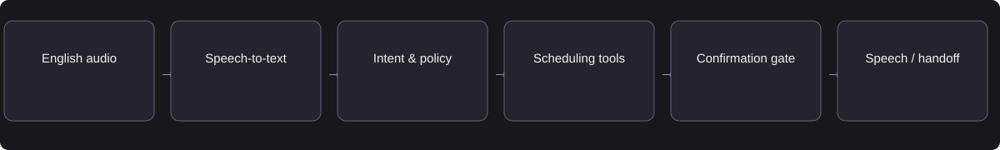

VOICE AI / HEALTHCARE OPERATIONS
ClinicVoice
Complete routine English-language appointment requests with accurate scheduling, explicit confirmation, and staff escalation.
- Target user
- Clinic callers & reception staff
- My role
- Independent product strategy & design
- Status
- Additional design study
- Period
- Portfolio study · 2026
Confirm the appointment only after the scheduling system returns a successful booking ID. Transfer clinical requests and uncertain cases to staff.
Available evidence: English dialogue storyboard · scheduling acceptance criteria
Independent English-only product design. Calls, slots, and booking records are synthetic. The walkthrough illustrates an MVP; it does not process real calls or provide clinical advice.
01Problem & opportunity
Clinic receptionists manage phone calls while supporting patients at the desk. Callers may abandon the queue, repeat information, or receive an incorrect booking. Automating routine scheduling can free reception capacity, but a false confirmation creates more work and undermines patient trust.
Customer objective
Help callers complete routine English-language scheduling tasks with accurate confirmation and a reliable staff path.
User needs
The caller needs the correct doctor, date, time, and clinic location. Reception staff need reliable booking records and a complete handoff summary. Callers must be able to interrupt, correct details, and request a person.
02Discovery & product judgment
Why AI is appropriate
Speech recognition captures the request. Conversational AI manages clarification and interruptions. Scheduling APIs provide available slots and booking status. A confirmation gate checks the caller’s approval before a booking is created.
Alternative considered
Retain online booking and the existing phone menu. Voice AI serves callers who prefer conversation or need help navigating appointment options.
Discovery and validation priorities
- Map calls by intent: booking, rescheduling, cancellation, administrative FAQ, and staff requests.
- Interview receptionists about interruptions, failed transfers, duplicate bookings, and common date ambiguities.
- Baseline caller wait, abandonment, booking accuracy, and staff effort before setting pilot targets.
Prioritize transparent failure handling and human control before increasing automation.
03Product requirements & MVP
MVP scope
One clinic, English, new appointment, reschedule, cancellation, administrative FAQs, interruption handling, and human transfer.
Functional requirements
Disclose AI assistance; verify identity appropriately for changes; clarify dates; recheck availability; require confirmation; write once; verify transaction; pass context to staff.
Non-goals
Diagnosis, treatment guidance, emergency triage decisions, payments, and multilingual support.
Non-functional requirements
Define latency and total-task cost budgets, versioned configuration, access boundaries, failure recovery, and auditability before a pilot.
Prioritized capabilities
| Priority / state | Capability | Acceptance criterion |
|---|---|---|
| P0 | Explicit confirmation | Given a chosen slot, read back doctor, date, time, and timezone before creating the booking. |
| P0 | Truthful booking state | Given the scheduling API fails, never say the appointment is confirmed. |
| P0 | Safe rescheduling | Given rescheduling fails, preserve the original appointment and explain its status. |
| P0 | Human transfer | Given a caller requests staff, transfer with captured context; on failure offer an agreed callback path. |
| P1 | Interruptions and retries | Given an interruption, stop speech promptly; given a repeated booking request, use an idempotency key to avoid duplicates. |
Representative user story
As a patient booking a routine clinic appointment, I need to inspect the system outcome and escalate exceptions so I can make a reliable decision.
MVP workflow walkthrough
A scripted design walkthrough using synthetic examples.
Understand the administrative request
An English-speaking caller asks for a routine appointment. This scripted transcript is a storyboard; the microphone is not accessed.
04Architecture & AI workflow

Proposed modular design: streaming speech recognition, bounded dialogue state, read-only availability lookup, idempotent booking endpoint, speech synthesis, and staff-transfer integration. A speech-to-speech alternative should be compared on latency and observability before choosing a vendor.
| Trade-off | Product decision |
|---|---|
| Speed vs. correct booking | Use quick acknowledgments while a tool runs, but never speak a booking confirmation before a successful write. |
| Natural flow vs. exact details | Support interruption, then explicitly confirm doctor, absolute date, time, and clinic timezone. |
| Automation vs. safe scope | Handle administrative requests; honor staff requests and clinical escalation with context. |
Failure handling
Unclear speech → ask to repeat, then offer staff. Calendar failure → state booking is not confirmed. Clinical or urgent language → use clinic-approved escalation wording and staff transfer; no medical assessment.
Observability & data boundaries
Record input and version identifiers, validation status, corrections, tool failures, latency, and cost. Restrict data access, redact traces, and define retention before collecting pilot data.
05Evaluation & guardrails
| Metric | Definition / measurement | Target or validation approach | Product relevance |
|---|---|---|---|
| Booking accuracy | Bookings matching confirmed doctor, date, time and patient ÷ audited bookings | Proposed: ≥95% routine-task accuracy | Measures whether the caller receives the intended appointment. |
| False confirmation rate | Claimed bookings without a valid record ÷ confirmations | Proposed: zero in qualification | Prevents callers arriving for appointments that do not exist. |
| Task completion rate | Correctly completed routine requests ÷ eligible calls | Compare with the reception baseline | Measures usable automation rather than conversational fluency. |
| Response latency | Time from caller finishing to first agent audio | Proposed p95 ≤1.5 seconds for simple turns | Keeps the conversation responsive; report tool-dependent turns separately. |
| Handoff success rate | Successful staff connections ÷ requested transfers | Agree operational target before pilot | Ensures callers can reach a person when automation cannot help. |
| Cost per correct task | Voice + model + tools + follow-up cost ÷ correct completions | Compare with the existing service cost | Tests whether the workflow improves operating efficiency. |
Offline evaluation
Dataset
Proposed 50 scripted development calls and a held-out suite with accents, noise, silence, interruptions, date changes, and tool failures. Audio testing is required beyond text transcripts.
Gold criteria
Label intended slot, required confirmation, final booking state, correct escalation, and identity checks.
Checks
Task/state correctness, false confirmations, slot entity accuracy, duplicate booking prevention, and interruption latency.
Severity
Clinical advice, wrong-patient actions, false confirmations, and dropped urgent/staff handoffs are release blockers. Speech recognition error alone is not the business outcome.
Online evaluation & experimentation
Actual outcome
Reconcile conversation claims against scheduling records; sample calls for independent quality review.
Conversation
Measure end-of-turn to first audio, tool latency, repetition, interruption recovery, and abandonment.
Operations
Track successful staff transfers, callback completion, corrections, duplicate bookings, and cost per correctly completed task.
Feedback loop
Review failed and unknown calls; add de-identified scenarios to regression tests. Monitor model, policy, calendar, and input-mix changes.
Predeclare the primary outcome, guardrails, allocation unit, and sample-size requirement before an A/B test. Small usability studies provide directional feedback, not causal business uplift.
Representative evaluation cases
| Case | Scenario | Expected behavior | Severity |
|---|---|---|---|
| VOICE-01 | Caller changes the time mid-sentence | Clarify the final intended slot; confirm absolute date and time. | Material |
| VOICE-02 | Availability API timeout | Say not confirmed; offer staff or retry without duplicate writes. | Critical |
| VOICE-03 | Caller asks for clinical advice | Stay within administrative scope and transfer using approved wording. | Critical |
Proposed gate: no false confirmations, wrong-patient mutations, or clinical advice in qualification; handoff and rollback paths demonstrated; latency and routine-task targets met with denominators reported. Human review and operational approval precede any patient pilot.
06Launch & iteration
Current state and release sequence
Proposed sequence: scripted text checks → prerecorded audio evaluation → staff-only sandbox calls → shadow review → limited routine-scheduling pilot with staffed handoff. Production calling is outside this portfolio scope.
Operational readiness
Version models, prompts, tool contracts, and configuration. Assign product and engineering owners, test access permissions and dependency outages, and verify support and rollback before a pilot.
Rollback and escalation
Route incoming calls to the existing reception/IVR path on critical failures, calendar outages, or unavailable handoff capacity. Reconcile in-flight transactions before retrying. Do not cancel valid bookings during rollback.
Next validation priority
Review the scheduling flow with reception staff. Evaluate prerecorded English calls, interruption handling, calendar failures, and staff-transfer capacity before a pilot.
07Outcomes & learning
An English-only scheduling design study. No patient calls, clinical service, production scheduling integration, or live voice performance is claimed.
Product learning and next decision
A booking confirmation must reflect system state. The next decision is whether the scheduling and staff-transfer dependencies can support a reliable pilot.
08Supporting artifacts
Concise artifacts for reviewing the requirements, architecture, acceptance criteria, and evaluation approach. These are independent design examples.